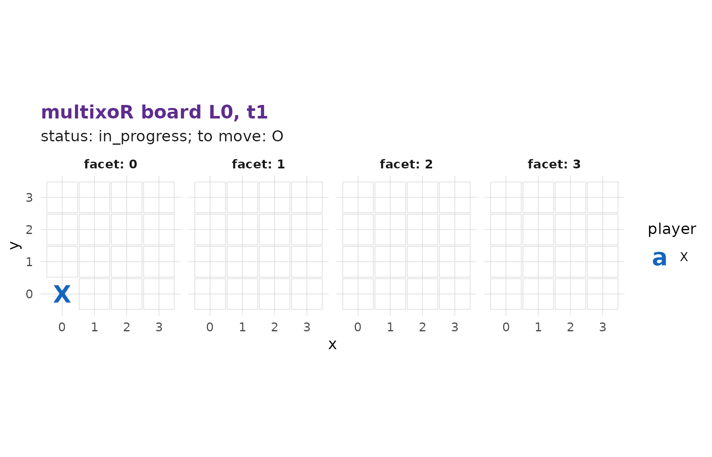
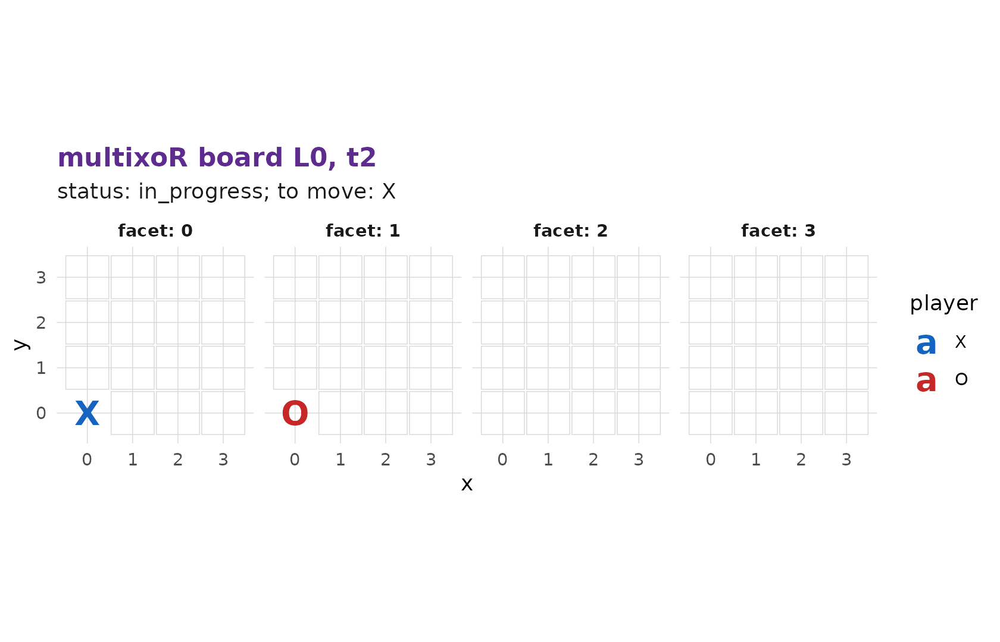
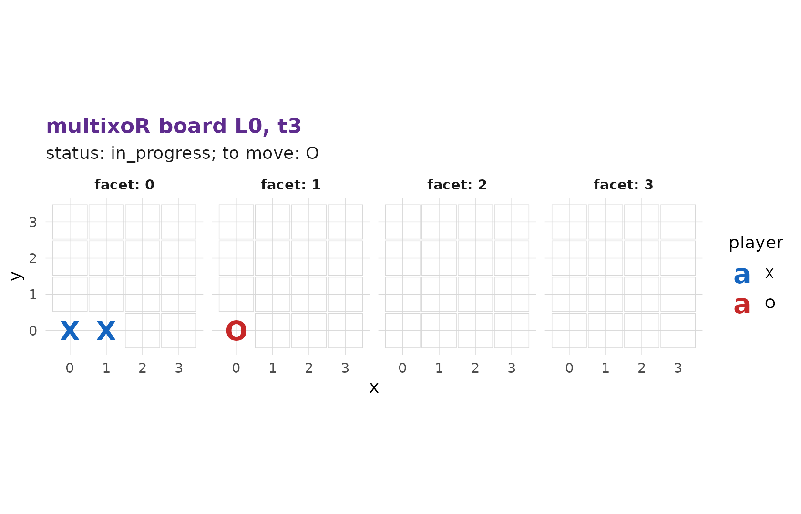

2. Playing your first game
Source:vignettes/articles/tutorial-2-first-game.Rmd
tutorial-2-first-game.RmdIn part 1 we met the board. Now we actually play. This page covers ordinary turn-by-turn play within a single timeline – the present move – and leaves branching for part 3.
Starting a game
g <- mxo_new_game()
mxo_to_move(g) # 1 = X moves first
#> [1] 1
nrow(mxo_legal_moves(g)) # every empty cell of the present board is legal
#> [1] 64Player 1 is X and moves first; player
2 is O. On an empty cube all 64 cells are
available.
The present move
A present move places your mark on an empty cell of the current present board and advances time by one step. The call is
mxo_move(game, "present", L_src, t_src, idx)where (L_src, t_src) is the board you are moving on –
L = 0, the current time t, for ordinary play –
and idx is the cell. Let’s make the first move: X takes the
corner idx = 0, i.e. (0,0,0).
g <- mxo_move(g, "present", L_src = 0L, t_src = 0L, idx = 0L) # X (0,0,0)
mxo_plot_board(g) # defaults to L = 0 and the present board
mxo_plot_board() with no t shows the
present snapshot, so X’s mark is already there. It is now O’s turn:
mxo_to_move(g)
#> [1] 2
g <- mxo_move(g, "present", 0L, 1L, 16L) # O (0,0,1): one step along z
mxo_plot_board(g)
Note the t_src climbed from 0 to
1: each present move advances time, so you always play on
the latest board. X replies in the same x-row, building
toward a line:
g <- mxo_move(g, "present", 0L, 2L, 1L) # X (1,0,0)
mxo_plot_board(g)
Reading the history
Every ply is recorded. mxo_history() returns the full
move table:
mxo_history(g)
#> # A tibble: 3 × 8
#> ply player kind L_src t_src idx L_new t_new
#> <int> <int> <chr> <int> <int> <int> <int> <int>
#> 1 1 1 present 0 0 0 NA 0
#> 2 2 2 present 0 1 16 NA 1
#> 3 3 1 present 0 2 1 NA 2mxo_status() summarises where the game stands:
mxo_status(g)
#> $status
#> [1] "in_progress"
#>
#> $winner
#> [1] NA
#>
#> $win_line
#> NULLMove notation
multixoR has a compact text notation for plies (rules section 8).
Serialize any record row with mxo_format_ply():
h <- mxo_history(g)
for (i in seq_len(nrow(h))) cat(mxo_format_ply(as.list(h[i, ])), "\n")
#> X present @ (0,0) [0]
#> O present @ (0,1) [16]
#> X present @ (0,2) [1]The form is PLAYER kind @ (L,t) [idx].
mxo_parse_ply() is the exact inverse, turning a string back
into a record:
mxo_parse_ply("X present @ (0,2) [1]")
#> $player
#> [1] 1
#>
#> $kind
#> [1] "present"
#>
#> $L_src
#> [1] 0
#>
#> $t_src
#> [1] 2
#>
#> $idx
#> [1] 1
#>
#> $L_new
#> [1] NALegal moves at any point
mxo_legal_moves() always lists exactly the moves
available from the current state – the engine never lets you play an
illegal one (an occupied cell, for instance, is rejected):
head(mxo_legal_moves(g), 5)
#> # A tibble: 5 × 5
#> kind L_src t_src idx player
#> <chr> <int> <int> <int> <int>
#> 1 present 0 3 2 2
#> 2 present 0 3 3 2
#> 3 present 0 3 4 2
#> 4 present 0 3 5 2
#> 5 present 0 3 6 2So far we have only played in the present, in a single timeline. The next page introduces the move that makes multixoR a multiverse game.
Previous: 1. The board and the five axes | Next: 3. Branching into the past →